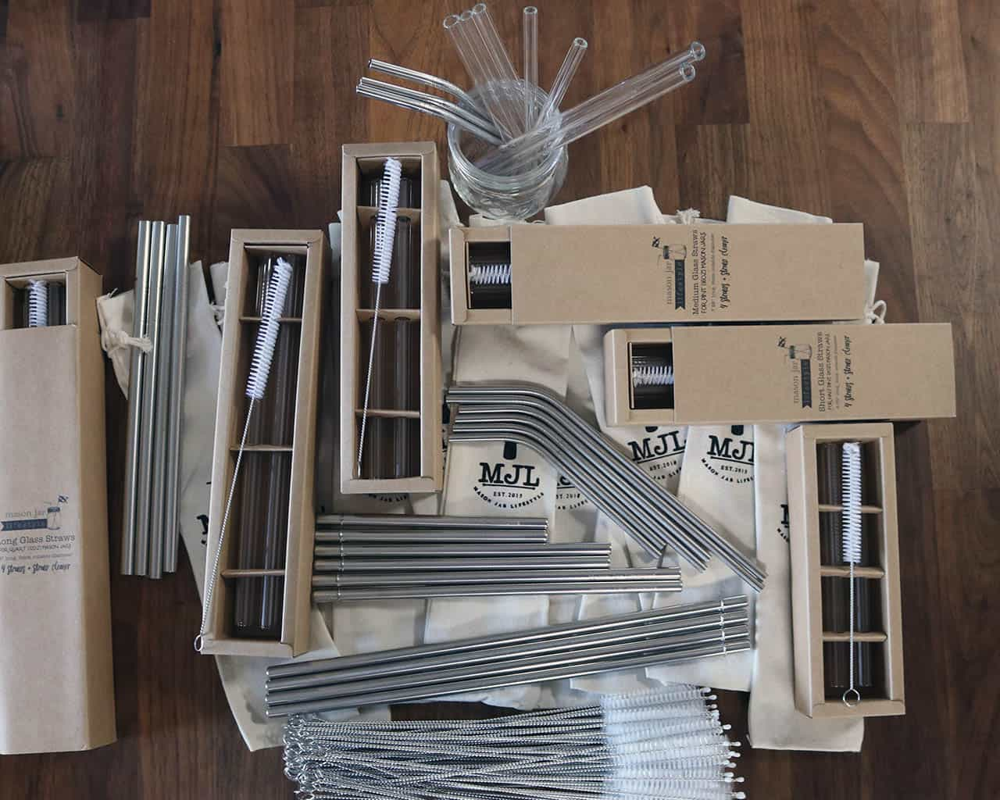
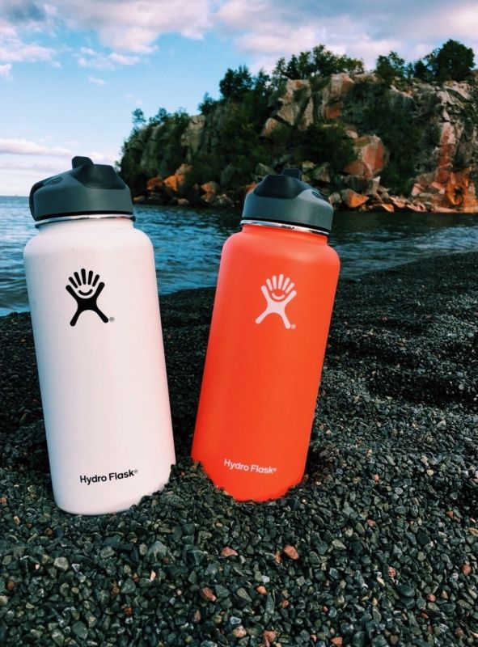
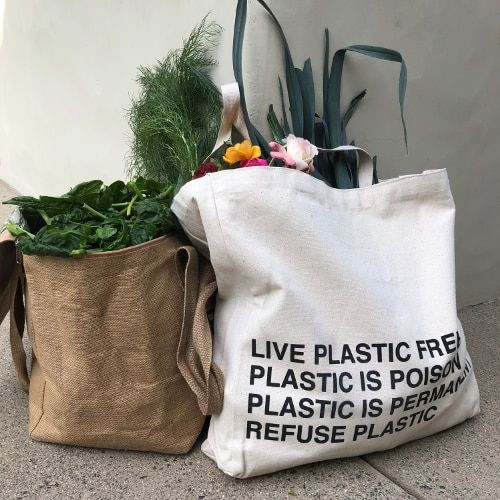
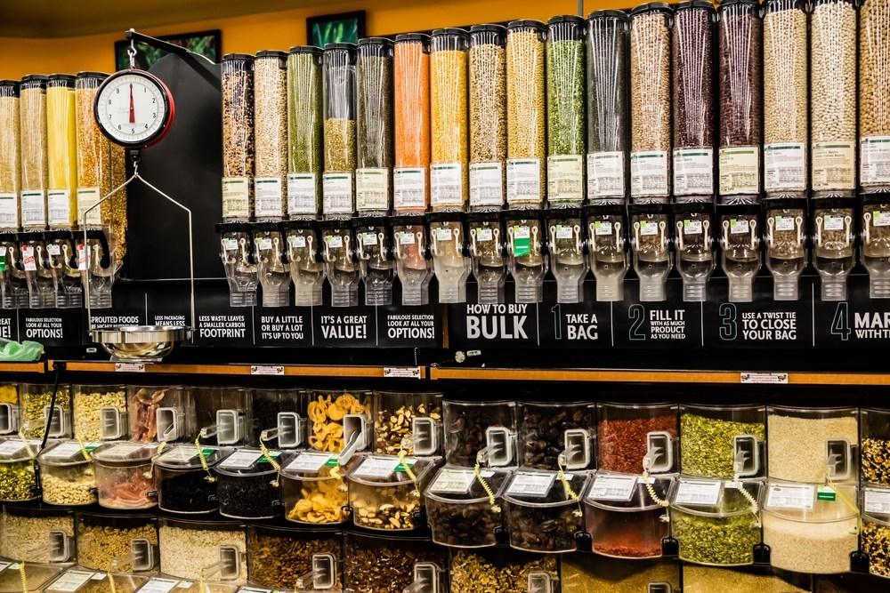

Metal Straws

Metal straws are another way of reducing plastic.
You can purchase inexpensive metal straws on amazon.
Plastic straws ends up in the ocean and it can kill turtles. So #savetheturtles
Reusable Bottles

Using reusable bottles is another way that we can cut down the use of plastic.
Instead of drinking out of plastic you can purchase a reusable water bottle, like a hydro flask.
Investing in one is definitely worth it because it can last a lifetime.
Reusable Bags

Why use reusable bags? Because it can help cut down the plastic usage.
Plastic can years to breakdown. By using cloth bags when grocery shopping
we can eliminate plastic bags from going into the ocean and polluting it.
Buying In Bulk

Buying in bulk at gorcey can cut down waste tremendously.
You can buy your oats and rice and other necessities. You will store them in class jars so no plastic or extra packaging is involved.